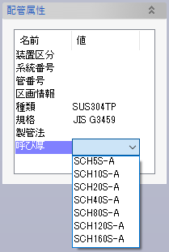

配管系統の名称や、配管の種類・呼び径といった各種属性の一覧を記述したCSVファイルを読み込んで、それぞれの系統に相当する配管セットを一度に作成して属性値を割り当てたり、既存の配管セットの属性値を更新したりします。
モデル構成ウィンドウに表示された
のいずれかのフォルダーのコンテキストメニューから「配管系統リストの読込」をクリックします。「開く」ウィンドウが表示されますので、CSVファイル名を指定して「開く」ボタンをクリックします。
1行目の内容は読み取られないため表題欄として使用します。
2行目以降に以下の内容を列挙します。「呼び圧力」までの列は省略不可で、不足していると読み込みエラーとなります。
系統名＋系統番号を「名前が系統名2文字の配管セット＋系統番号3文字の配下の配管セット」以外の形式で指定したい場合は、区切り文字として「/」を使って階層構造を指定するようにしてください。
重量計算について【1】
Evo.Ship内部では、呼び厚さ（スケジュール）の記号だけで配管重量を決定できるようにするため、規格上は同一の呼び厚さであっても異なる名称を割り当てていることがあります。たとえばSUS304TPの呼び厚さ記号は、JIS規格ではSCH5S → SCH10S → SCH20S → SCH40 → SCH80 → SCH120... となっていますが、Evo.Shipでは「一般的なステンレス配管の呼び厚さ」としてSCH5S-A → SCH10S-A → SCH20S-A → SCH40S-A → SCH80S-A → SCH120S-A... という記号を使っています。

Evo.Shipを利用して配管重量を計算するのであれば、配管系統リストの作成時に配管属性編集コマンドを利用して、該当する配管種類に割り当てられた呼び厚さ記号をあらかじめ確認しておいてください。
重量計算について【2】
Evo.Shipに登録されている鋼管フランジの標準部品は、SS400材として重量が設定されています。ステンレス鋼のフランジ重量データは登録されていませんので、配管セットに割り当てられた「種類」属性からフランジの材料を決定し（例：ステンレス鋼管の種類＝SUS304TPY→フランジ材料＝SUS304）、その材料の密度をもとにフランジ重量を計算します。使用するステンレス鋼フランジの材料がアプリケーションの材料設定に登録されていることを確認しておいてください（初期設定でSUS304とSUS316は登録済み）。
防熱材の厚さを設定しておくと、その配管セットのコンテキストメニューから、配管セット内のパイプに一括で防熱材を作成することができます。
防熱材関連属性は、配管系統リストを使わなくとも設定できます。配管セットにユーザー定義属性を以下の名称で設定してください。
配管セットのコンテキストメニューから「配管系統属性の表示」をクリックすると、情報ウィンドウに属性が出力されます。複数の配管セットや、サブ配管セットを持つ配管セットを選択すると、複数の属性が一括で表示できます。